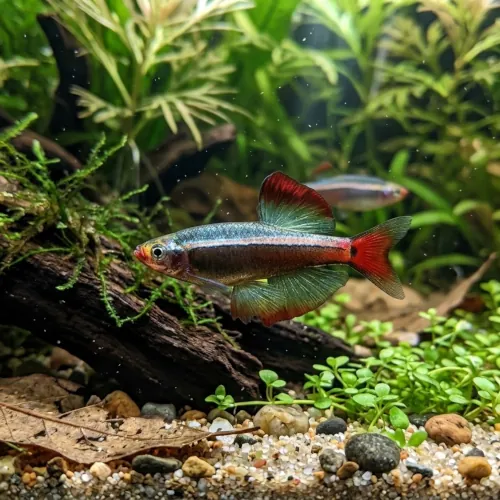

Nome popular principal
Tanictis
Tanictis, Falso Neon, White Cloud Mountain Minnow, Peixe da Montanha Nuvem Branca
Ficha de peixe
Barbos e Ciprinídeos
Um peixe de água fria incrivelmente rústico e gracioso, perfeito para aquários sem aquecedor e tanques comunitários pacíficos.

Nome popular principal
Tanictis, Falso Neon, White Cloud Mountain Minnow, Peixe da Montanha Nuvem Branca
Nome científico
Nome técnico essencial para taxonomia, cruzamento de manejo e referência editorial consistente.
Dificuldade de manejo
Use este nível como referência inicial, sempre considerando volume, estabilidade e compatibilidade do aquário.
Seção 1
Seção 2
Seções 4 a 6
Tanictis tem hábito alimentar onívoro. Excelente. 1 a 2 vezes ao dia em pequenas porções. Aceita praticamente qualquer tipo de ração comercial de pequeno formato (flocos ou micro-grãos) e aprecia complementação com dáfnias e artêmias.
Machos são mais esguios e apresentam cores vermelhas e brilhantes mais vibrantes nas nadadeiras; fêmeas têm corpo mais roliço e volumoso. Tipo de reprodução: Ovíparo. Dificuldade de reprodução: Fácil. Espécie de reprodução muito fácil, desovando livremente entre vegetação densa ou musgos, muitas vezes sem necessidade de intervenção do aquarista.
Alta. Substrato recomendado: Substrato escuro ou areia fina de rio com bastante vegetação. Necessidade de esconderijos: Média. Exibe sua melhor coloração em aquários bem plantados com boa circulação e temperaturas ambientes amenas.
Seção 7
Destaca-se por dispensar o uso de aquecedores na maioria das regiões, suportando temperaturas bem mais baixas que peixes tropicais padrão.
Seção 8
Geralmente não, pois é um peixe de água fria/subtropical que tolera temperaturas entre 15°C e 24°C sem problemas.
Recomenda-se manter um grupo mínimo de 6 a 8 exemplares para promover o comportamento gregário e reduzir o estresse.
Apesar do brilho cintilante parecido, o Tanictis é originário da China e tolera água fria, enquanto o Neon é amazônico e estritamente tropical.